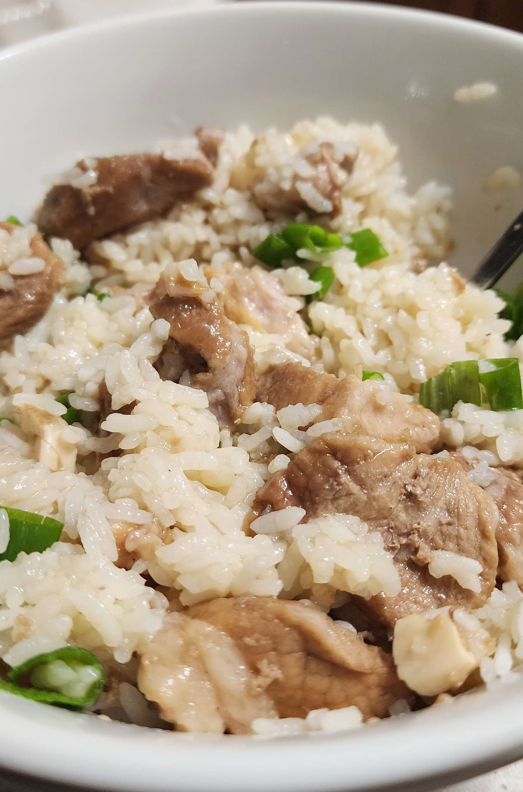

Mom's Adobo

Pork Adobo with rice and green onions
A salty sour savory pork dish straight from my mom. My personal favorite Filipino dish that is super easy to make.
Ingredients
- Pork Shoulder
- White Vinegar
- Soy Sauce
- Bay Leaves
- Black Pepper
Instructions
- Cut Pork into roughly 1 inch cubes and place into pot
- Fill pot a bit more than half of the height of the pork with water
- Fill the rest of the height of the pork with vinegar
- Add 2 Bay Leaves and a lot of Grinded Black Pepper (and whole peppercorns if you want)
- Heat up to a boil and simmer for roughly 40 minutes
- Add a bit of soy sauce (add a little less than you would think, you can always add more after)
- Let it simmer for another 20 or until the pork is super soft
Optional
7.5. Take the pork out and fry them with oil on a seperate pan till the sides are nice and seared
- Now serve with some white rice and add a bit of green onions and other toppings to enjoy :)
Home